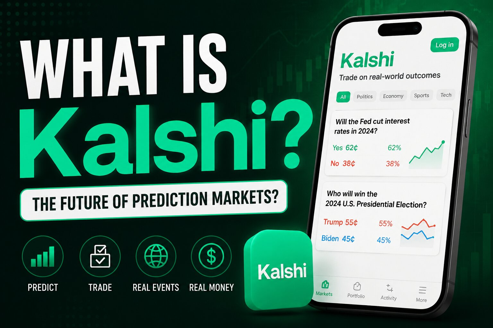

What Is Kalshi? Inside America's Regulated Prediction Market

The one-sentence version
Kalshi is a US exchange, licensed by the Commodity Futures Trading Commission, where anyone with a bank account can buy a contract that pays out $1.00 if a real-world event happens and $0.00 if it doesn't. A contract on "Will the Fed cut rates in September?" trading at 62 cents is the market's collective way of saying it thinks there's roughly a 62% chance that happens. That's the whole mechanism — everything else is just which events get listed and who's allowed to trade them.
Who built it, and why the CFTC license matters
Kalshi was started in San Francisco in 2018 by Tarek Mansour and Luana Lopes Lara, two MIT graduates who reportedly first called the project "Kownig" before settling on the name that stuck. The company spent two years going through the process of becoming a Designated Contract Market, the same regulatory category the CFTC uses for exchanges like the CME. That approval came through in November 2020, and Kalshi opened its first public contracts in 2021.
The DCM label is the difference between Kalshi and an offshore betting site. It means Kalshi has to publish settlement prices, volume, and open interest daily; keep customer funds segregated from its own operating capital; and get each new contract type certified as compliant with the Commodity Exchange Act before it can list it. It also means Kalshi isn't the one setting the odds or taking your losses — it's the venue. Traders take the other side of each other's positions, and Kalshi collects a small, probability-weighted fee per contract, which is highest right around a 50-cent coin-flip price and drops toward zero as a contract approaches 1 cent or 99 cents.
A concrete example of a contract
During the NFL playoffs, Kalshi listed a market on whether the Philadelphia Eagles would win the NFC Championship. At one point the "Yes" side was trading around 24 cents and the "No" side around 78 cents — the market pricing the Eagles as a clear underdog in that particular game. Anyone who bought "Yes" at 24 cents and was right would have collected a dollar per contract; anyone who bought "No" and was wrong would have lost their stake entirely. That's the mechanic behind every one of Kalshi's thousands of listed markets, whether the subject is a football game, a jobs report, or an awards show.
What you can actually trade
Sports now makes up roughly two-thirds of Kalshi's total trading volume, which is a significant shift from its early identity as a politics- and economics-focused exchange. The Super Bowl alone reportedly drove somewhere around $470 million in trading activity on the platform, and its March Madness champion market has cleared more than $54 million. Beyond sports, Kalshi lists contracts on interest-rate decisions, inflation prints, elections and control of Congress, crypto price thresholds, award-show winners, and box-office results. Kalshi is aware that sports has become an outsized share of its business and has been pushing to diversify — the company has reported that women now make up about 26% of its user base, up from 13% roughly ten months earlier.
The legal fight that defines Kalshi in 2026
Kalshi's federal license has never settled the question of whether individual states have to go along with it. Election contracts became legal after a 2024 ruling from the DC Circuit cleared Kalshi to list markets on election outcomes and control of Congress. Sports contracts have been a much rockier road. Several states — including Nevada, New Jersey, and Maryland — sent Kalshi cease-and-desist letters arguing that sports event contracts are functionally sports betting and require a state gambling license. Kalshi sued back, arguing federal law preempts state gambling law for a CFTC-regulated product.
The results have been genuinely mixed. Kalshi won early in New Jersey and Tennessee. It lost in Ohio, where a federal judge ruled in March 2026 that Kalshi's contracts amount to gambling under state law. Arizona's attorney general filed 20 criminal counts against the company that same month, alleging it was running an unlicensed gambling operation — Kalshi preemptively sued the state five days earlier and the CFTC later won a restraining order pausing Arizona's case. Then in April 2026, the Third Circuit Court of Appeals became the first federal appeals court to side with Kalshi, upholding an injunction that blocks New Jersey from enforcing its gambling law against the company. As of mid-2026, Kalshi is dealing with active disputes in more than a dozen states, and the underlying question — who actually regulates prediction markets, Washington or the states — looks headed toward a higher court eventually.
Growing pains and enforcement stories
Being a real financial exchange means Kalshi also polices its own users, and 2026 produced several notable cases. In January, some users who had correctly predicted an NFL outcome were initially paid back only their original stake instead of their full winnings — Kalshi reversed course and paid out in full after public pressure. In February, a video editor who worked for the YouTuber MrBeast was suspended and fined over suspected insider trading tied to non-public information about upcoming videos. In April, three congressional candidates were fined and suspended for placing bets on their own campaigns. And in July, a Kalshi trader analyzing music-streaming data flagged an unusual spike in a song's chart performance, which led Spotify to confirm and remove roughly 500,000 fraudulent streams — an unusual case of a prediction-market trader surfacing fraud in an entirely different industry.
The scrutiny hasn't been limited to individual users. In May 2026, the US Senate banned its own senators and staff from trading on prediction markets like Kalshi, citing concerns about election integrity and public trust.
How Kalshi actually differs from a sportsbook
The comparison to DraftKings or FanDuel comes up constantly, and the mechanical difference is real: a sportsbook sets its own odds and takes the other side of your bet, so it profits when you lose. Kalshi is a marketplace — it matches traders against each other and profits from a small transaction fee regardless of who wins, the same way a stock exchange doesn't care whether a stock goes up or down. That structure is also Kalshi's core legal argument for why sports contracts shouldn't be treated as gambling under state law, even though from a trader's chair the experience of picking a side and watching a number move can feel similar either way.
The money behind it
Kalshi has raised money at a fast clip as its volume has grown. A Series D round brought in $300 million at a $5 billion valuation, led by Andreessen Horowitz and Sequoia Capital. A subsequent Series E, led by Paradigm, raised $1 billion at an $11 billion valuation, and later reporting put the company's valuation as high as $22 billion. Total event-contract volume on the exchange was reported at roughly $52 billion as of March 2026.
Disclaimer: This post is for informational purposes only and is not financial or legal advice. Prediction market trading carries real financial risk, regulatory status varies by state and can change quickly, and past performance or platform figures are not guarantees of future results. Do your own research and check your state's current rules before trading.